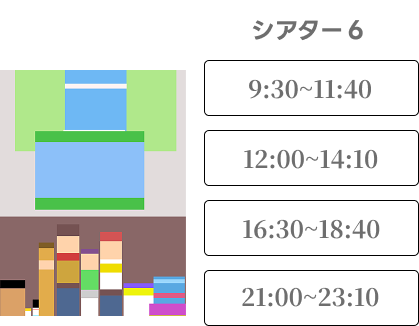
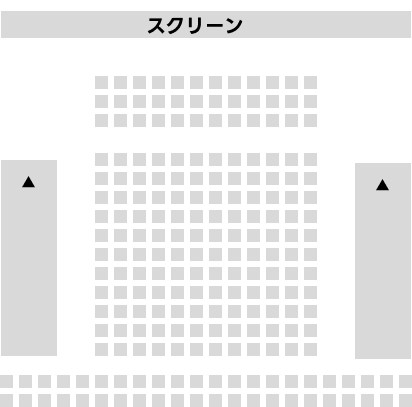
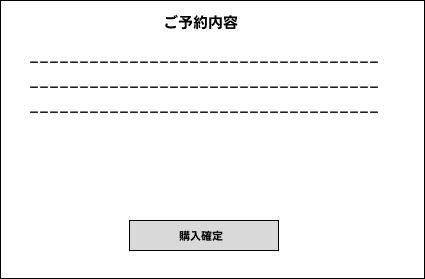

平日朝または深夜帯は人が少なく見やすいです。 購入は映画館によって異なりますが大体２、３日前から映画チケットの購入が可能になります。

座席後方にスピーカーがあるため大きい音で見たい人、全体を見渡したい人は座席後方がおすすめです。 映画に集中したい、見やすい席は真ん中がおすすめです。

映画館クーポンを使用する際はこの時に使用します。 映画館の会員になるとポイントが貯まるため、頻繁に映画館を利用される方は入会をお勧めします。
※券売機購入とオンラインチケット購入の手順はほとんど変わりません。 分からない点につきましては各映画サイトや窓口スタッフにお問い合わせ下さい。